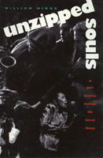

<body bgcolor="#FFFFFF" text="#000000" link="#0000FF" vlink="#CC0000" alink="#CC0000"><center><hr width="350" size="1" align="center" noshade>A "jazz journey" into the former Soviet Union's burgeoning music scene<hr width="350" size="1" align="center" noshade><p><a href="https://cdcshoppingcart.uchicago.edu/Cart/ChicagoBook.aspx?ISBN=9781566393249&&PRESS=temple" target="_top">Buy this book!</a> | <a href="https://cdcshoppingcart.uchicago.edu/Cart/Cart.aspx?PRESS=temple" target="_top">View Cart</a> | <a href="https://cdcshoppingcart.uchicago.edu/Cart/Cart.aspx?PRESS=temple" target="_top">Check Out</a></p><p></p></center><!--none//--><h1>Unzipped Souls</h1>
<H2>A Jazz Journey Through the Soviet Union</H2>
<h3>William Minor</h3>
<P>cloth 1-56639-324-8 $45.50, Aug 95, <FONT COLOR=#990033>Out of Stock Unavailable</FONT>
<BR> 256 pp
6x9
25&nbsp;halftones
</P><BLOCKQUOTE><I>"William Minor, taking the reader on a tour of the Soviet jazz circuit in the twilight of communism, personalizes the phenomenon with accounts he gathered from folks who, in the face of seemingly insurmountable obstacles, both participated in carrying off this cultural coup and continue to perpetuate the jazz idiom ... a timely and truly astonishing tale, and, in the author's lucid prose, a charming one as well."</I>
<br>&#151<b>W. Royal Stokes</b>, editor of <I>Jazz Notes</I><I></I></BLOCKQUOTE>
<p>Across 9,000 kilometers and six republics of the former Soviet Union, William Minor embarked on a "jazz journey" to observe the development of contemporary Russian jazz, as it responded to abundance of cultural changes.
<p>A jazz writer and musician himself, Minor sat in on private performances and went backstage at several major festivals, witnessing first-hand the artistic release and creativity of Russian musicians. Throughout his travels, the author interviewed musicians, critics, and fans, and reproduces in his book an intimate sense of their aspirations, struggles, successes; they tell of shared resources, networks, and inventive forums for playing and exchanging information.
<p>At the same time, this narrative bespeaks the hard realities of life: the difficulty of getting equipment, the scant number of clubs, and the limited information about the music scene in other parts of the world. Minor's impressions and experiences are a valuable behind-the-scenes look the country and the culture just before the collapse of the communist state.
<BR>&nbsp;<h2>Contents</h2><P>
<p>Acknowledgments
<br>Introduction
<p><b>Part I: Homework</b>
<br>1. Now's the Time
<br>2. A Man from Mars
<br>3. The Breakthrough
<br>4. Predecessors
<br>5. Homegrown Bureaucracy...And a Citizen of Boston
<p><b>Part II: Moscow</b>
<br>6. A Critic's Apartment and the Youth Hotel
<br>7. First Concerts, Our Dinner with Irene, and a Man Who Loves the Blues
<br>8. The Belle of Baku and the Bear of Bulgaria
<br>9. Two Bad Boys
<br>10. "Man, He Is the Best!"
<br>11. The Last Supper
<p><b>Part III: Leningrad and the Republics</b>
<br>12. Peter-the-First Stew
<br>13. The Freedom Monument
<br>14. The Ukraine, in Joy and Sorrow
<br>15. The Healing Waters of Tbilisi
<br>16. Leningrad Shadows and the Long White Night
<p>Coda
<br>Index
</P><BR>&nbsp;<H2>About the Author(s)</H2>
<table><tr><td valign="top"><img src="/tempress/authors/1057_au.gif" height="90" width="75"></td><td width="100%" valign="middle"><p><b>William Minor</b> writes for numerous journals and magazines, including <I>Down Beat</i>,<I>Coda</I>, <I>JazzTimes</I>, and <I>Jazz Forum</I>. He is also a visual artist, professional musician, and Instructor in the Humanities Division at Monterey Peninsula College, California.</P></td></tr></table>
<BR><H2>Subject Categories</H2>
<p><A HREF="/tempress/music.html" TARGET="_top">Music and Dance</a>
<BR><A HREF="/tempress/history.html" TARGET="_top">History</a>
</p>
<p align="center"><a href="https://cdcshoppingcart.uchicago.edu/Cart/ChicagoBook.aspx?ISBN=9781566393249&&PRESS=temple" target="_top">Buy this book!</a> | <a href="https://cdcshoppingcart.uchicago.edu/Cart/Cart.aspx?PRESS=temple" target="_top">View Cart</a> | <a href="https://cdcshoppingcart.uchicago.edu/Cart/Cart.aspx?PRESS=temple" target="_top">Check Out</a></p><p><font face="Arial" size="1"><a href="copyright.html" onMouseOver="window.status='Web Copyright Policy';return true;" onMouseOut="window.status=''" title="Web Copyright Policy">&copy;</a> 2015 <a href="http://www.temple.edu" target="new" onMouseOver="window.status='Link to Temple University home page';return true;" onMouseOut="window.status=''" title="Link to Temple University home page">Temple University</a>. All Rights Reserved. http://www.temple.edu/tempress/titles/1057_reg.html</font></p>